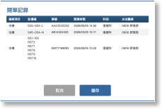
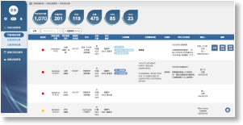
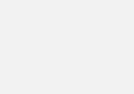
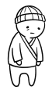
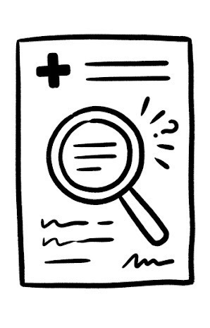
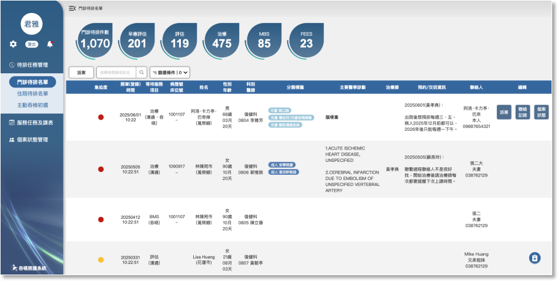

資料每日三個時間點前完成更新HIS開單資料至待排名單管理中：
15:00:01 ～ 24:00:00
00:00:01 ～ 06:00:00
06:00:01 ～ 11:00:00
11:00:01 ～ 15:00:00
07:00:00
12:00:00
16:00:00
取HIS資料區間
名單更新時間
07:00:00
12:00:00
16:00:00
01-1門診待排名單
醫師可能會開給同一位病患重覆批價號的服務單(因為服務單可使用時間到時期或者誤開)，因此，門診待排管理列表中，資料顯示的規則以單一病患的不同待排服務來顯示，規則有以下幾種：


1. 目前沒有待排項目，也沒有已派案(未結案)或進行中的服務
2. 沒有待排項目，但有一項已派案或進行中服務(含已到期但未結案)
3. 沒有待排項目，但有兩項(含以上)已派案或進行中服務(含已到期但未結案)
4. 有待排項目，但沒有派案或進行中服務(含已到期但未結案)
5. 有待排項目，也有派案或進行中服務(含已到期但未結案)
所有主項都列入待排名單
全部派入治療中的治療師
- 對應主項派給進行中的治療師
- 其他主項派給”治療”主項治療師
- 有待排的主項合併在開單記錄中
- 沒有待排的主項列為新的待排
- 已有主項的，不論是否已派案，都合併在開單記錄中
- 之前沒有主項的，將主項分別列入待排名單
待排的主服務類型分為5類，每筆待排任務以單張(開單號)裡對應主服務的批價碼來顯示：
1. 治療
● S45-024-L
● S45-024-N
● S51-105
● S51-112
● S51-103
● S51-104
2. 評估
● S51-107
● S45-024-L + S48-151-N + S51-107
● S45-024-N + S48-151-N + S51-107
● S45-024-N + S51-107
3. 檢查
● S48-151
● S48-151-N
4. MBS
● S48-M05 + X75-980
5. FEES
● S48-M02
列表排列順序：
1. 預設顯示未派案的名單
2. 開單(預排)時間舊到新
3. 急迫度燈號：紅燈 ＞ 黃燈 ＞ 綠燈 ＞ 灰燈(未設定的都顯示灰)
版型及互動說明：
功能
內容
說明
統計Dashboard
待排件數
1. 以水滴狀的色塊分別顯示不同主項的資料。
2. 資料分為總待排數及評估、治療、檢查、MBS、FEES，5個主項的待排筆數統計(合併開單記錄算一筆)。
3. 點選水滴狀的色塊連動顯示於下方列表的資料內容。
多選派案
按鈕
點擊後可多選派案、設定急迫度或者填寫備註。
搜尋
文字輸入框
1. 格式：中英⽂⼤⼩寫及原住民姓名中間加的符號(2026年好像有個法規說他們要改名成原住民姓名才能享有原住民福利，所以未來應該會很多人變更姓名)
2. 可搜病歷號、姓名、身份證字號
篩選
按鈕-多篩選入口
1. 點選後開啟"01-1-1 門診待排篩選"。
2. 只要有選篩選項目，列表頁按鈕上要顯示選了多少項目的數字。
待排名單欄位項目
急迫度
燈號依照治療師填寫預排設定，若是新病人，燈號預設為灰色
- 紅燈
- 黃燈
- 綠燈
- 灰燈

開單(登錄)時間
記錄預約的時間：
1. 由治療師填寫"02-2-3 結案及預排"或"03-1-2-1-2 新增/編輯預約儀器資訊"的時間或者醫生開單的時間。
2. 若預排名單中已有相同的主服務項目，新開單的資料儲存在開單記錄中，待排名單列表顯示最早的待排資料。
等待服務的項目
1. 依治療師填寫預排設定或醫師開立的批價碼規則顯示五項主服務類型：
- 治療
- 評估
- 檢查
- MBS
- FEES
2. 若有標記服務類型，則以括號標示於服務項目下方：
- 溝通
- 吞嚥
- 溝通＋吞嚥
病歷號
資料來源：HIS 住院醫囑
姓名
(居住行政區)
資料來源：HIS 住院醫囑(保留字數彈性，由其是原住民姓名)
下排的居住行政區取自病人個資居住地址。
性別/年齡
資料來源：HIS病⼈基本資料檔
- 性別：
- 年齡：由出⽣年⽉⽇換算成歲⽉天
科別/醫師
1. 資料來源：HIS開單醫師資料
2. 顯示方式，上排科別，下排醫師代碼及姓名
分類標籤
分類標籤分為兒童及成⼈兩⼤類，以膠囊狀⾊塊包覆項⽬⽂字且有不同底⾊呈現。
- 兒童共⼗八項，專業項⽬前⽅加上”兒童及⼀個字元“，膠囊底⾊為 background color:#A5CFE0：
- 成⼈共⼗五項，，專業項⽬前⽅加上”成⼈及⼀個字元“，膠囊底⾊為 background color:#5F8DBE：
主要醫學診斷
門診醫囑臨床診斷，要顯⽰對應的ICD10及標準的中英⽂名。
治療師
1. 資料來源由治療師填寫待排時，此欄位先顯示填寫的治療師姓名，如果是由醫師開單，則空白。
2. 管理者派案後，此欄位顯示主責治療師的姓名。
預約/交班資訊
1. 資料來源由治療師填寫待排時，此欄位先顯示預約者填寫的聯繫內容或時間備註。
2. 管理者開始與病人聯絡後，則最顯示最新一筆聯聯繫內容或時間備註，並顯示記錄時間及記錄人姓名。
聯絡人
1. 資料來源由治療師填寫待排時，顯示填單時記錄的聯絡人。
2. 若由醫生開單的待排，則顯示系統中預計的主要聯絡人資料。
編輯按鈕
三個可操作的按鈕功能：
- 派案：點擊後開啟”01-1-2 門診派案/排課”。
- 聯絡記錄：點擊後開啟"03-1-2-1 預約及聯絡記錄"。
- 個案狀態：點擊後開啟"03-1-1 個案狀態"。
版面資料說明：
就醫
醫生HIS開單
預約治療師
媒合治療師
治療報告/結案
批價碼對應主服務
待排任務名單
派案
預約待排


吞嚥系統
由治療師代病人預約，排到時間候再請醫生補單
病人就醫及媒合治療師流程：
待排任務名單
治療中
處理方式
情境說明

01-1-1 門診待排篩選
03-1-1 個案狀態
03-1-2-1 預約及聯絡記錄
01-1-2 門診派案/排課